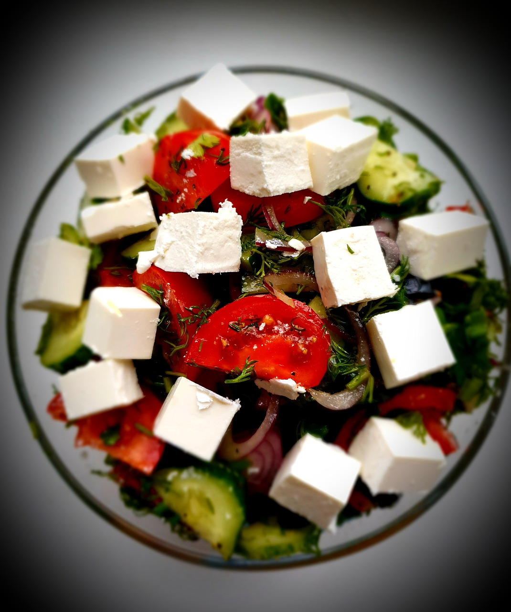
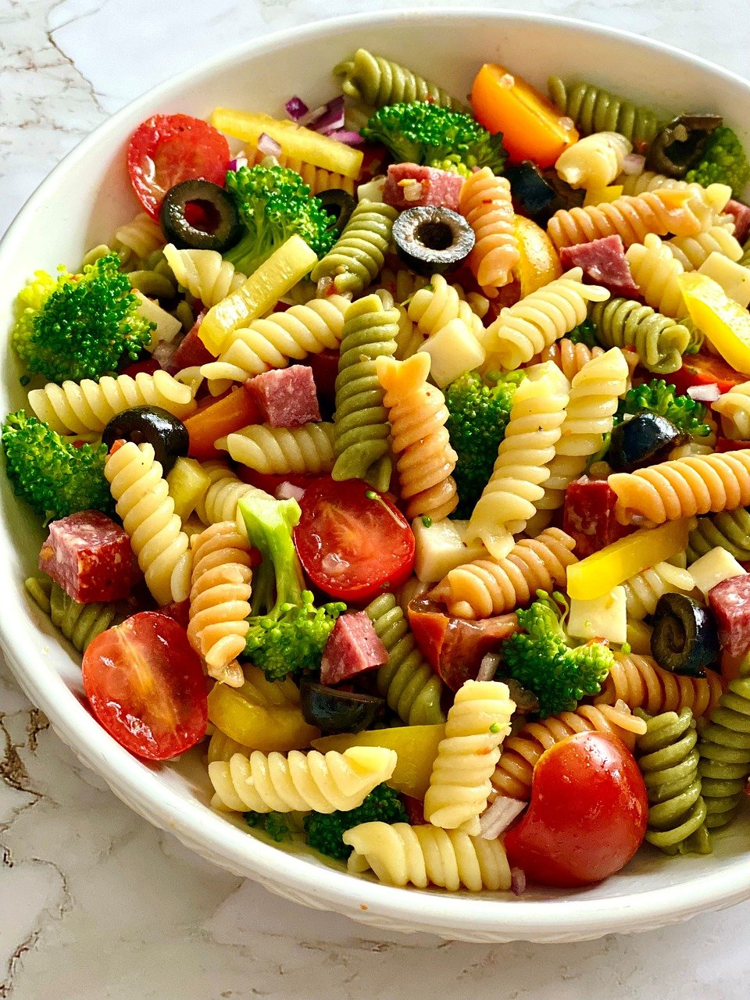
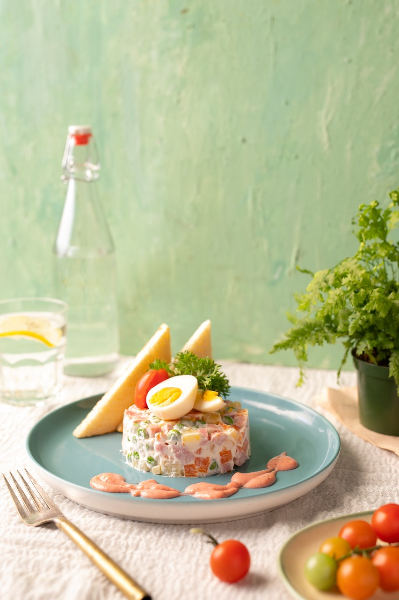
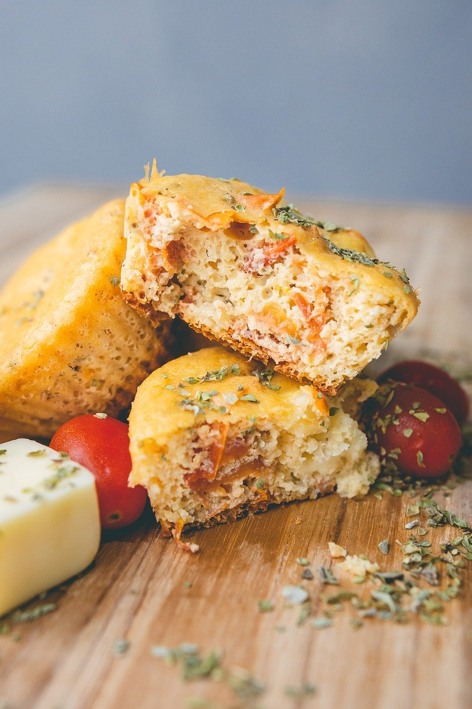
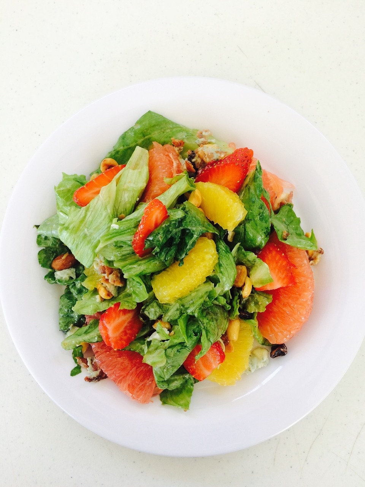
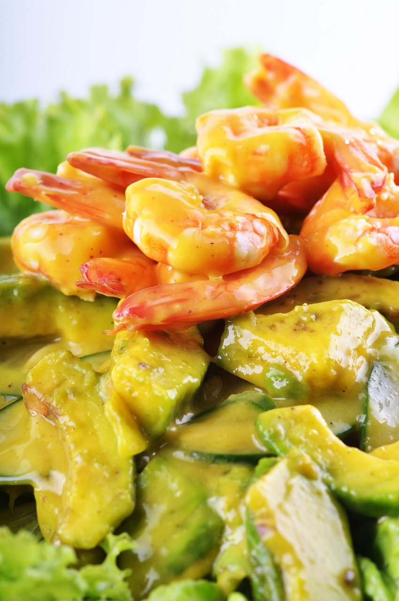

Des délices désaltérants accompagnent chaque bouchée, les boissons rafraîchissantes se mêlent en harmonie aux saveurs des repas, offrant une symphonie de fraîcheur et de plaisir gustatif.
Découvrez des boissons aux saveurs du monde, aux goûts sucrés, doux, inconnu et parfois piquants

Salade de Feta
Ingrédients
Salade type battavia
feta
concombre
tomate

Salade de pâtes

Macédoine-oeufs dursSalade de courgettes

muffins salés

Salade d'agrumesSalade composée

Schrimp and avocado